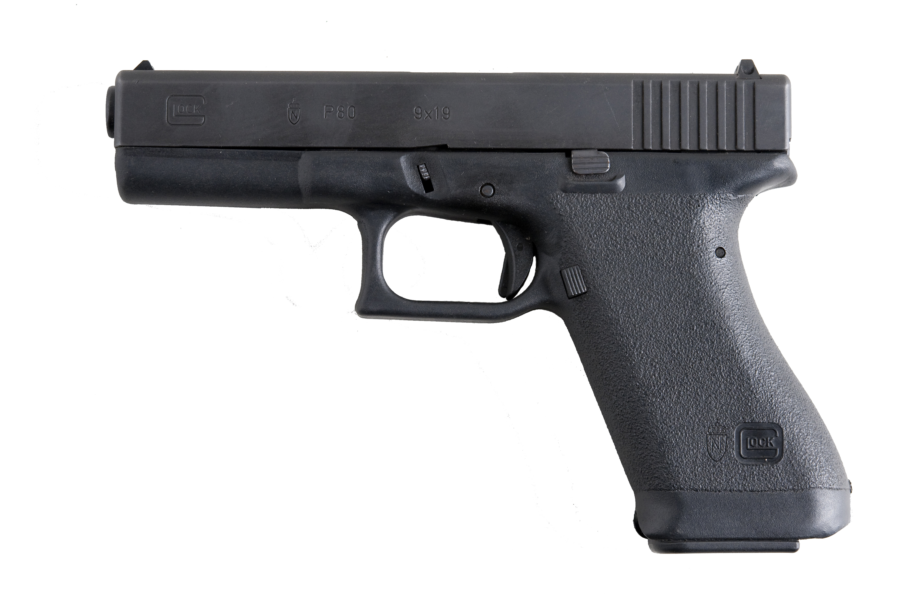

Během 2. světové války bala rakouská servisní pistole Walter P.38 svoji roli si ponechala i po válce, ale v pozdních 70. se oběvovali lepší alternativy a rakouské ozbrojené síly se scháněly náhradu staré P.38 roku 1980.
Z počátku to vypadalo, že si zvolí domací Steyr GB, který ovšem měl konkurenci jako Beretta, nebo Sig Sauer. Nacíc Steyr byla jediná rakouská zbrojovka dávalo by smysl, že jí dají přednost.
Zakladatel malé společnosti v Deutsch-Wagram (nedaleko Vídně) co vyráběla polymerové produkty, původně záclonové tyče a dveřové kliky. Během pozdních 70. let Glock začal dělat produkty pro armádu jako nože a polní lopaty.
Glock před tím nedělal žádnou střelnou zbraň, ale jak se dozvěděl o tom, že se má nahrazovat Walter P.38 rozhodl se navrhnout svoji vlastní.
Řídil se 17. kritériemi co vytvořilo rakouské ministerstvo.
Jelikož Gaston neměl žádné jiné předešlé produkty podle kterých by se řídil než, plastové kliky. Glock vytvořil
úplně
novou zbraň navrženou podle přesných specifikací rakouského ministerstva obrany.
Svůj nový výtvor na 17 nábojů pojmenoval Glock 17. (protože to byl jeho 17. vynález).
Roku 1982 Glock předložil svůj výtvor rakouské armádě na testování kde vyhrál proti Sig Saueru(P220 a P226), H&K(P7) a Bereťe 92.
Technické parametery Glocku překonaly všechny svoje rivaly. Jelikož se Američané právě rozhodli zařadit Berettu do výzbroje svých ozbrojených složek. Novinky o tom, že neznámy výrobce porazil zavedené firmy byly v té době poněkud překvapující.
Média ovšem byla znepokojená, že by se vysoko kapacitní zásobník osvěčil u teroristických činnů, a že by plastový rám nebyl vidět na letištích. Glock byl popsán jako "Tailor-made for terrorists"(Vyrobeno na míru pro teroristy).
Díky zmiňovaným kritériím má Glock více modelů, než má ruka prstů.
S postupem času se odpor vůči nebezpečné plastové klice rozptýlil a stále více policejních a ozbrojených sožek implikovalo Glock do své výbavy během 90-tých let.